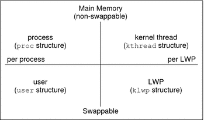

|
|||||||||||||||||||
|
1. Managing Terminals and Modems (Overview) 2. Setting Up Terminals and Modems (Tasks) 3. Managing Serial Ports With the Service Access Facility (Tasks) 4. Managing System Resources (Overview) 5. Displaying and Changing System Information (Tasks) 8. Scheduling System Tasks (Tasks) 9. Managing System Accounting (Tasks) 10. System Accounting (Reference) 11. Managing System Performance (Overview) What's New in Managing System Performance? Where to Find System Performance Tasks System Performance and System Resources About Monitoring System Performance 12. Managing System Processes (Tasks) 13. Monitoring System Performance (Tasks) 14. Troubleshooting Software Problems (Overview) 16. Managing Core Files (Tasks) 17. Managing System Crash Information (Tasks) 18. Troubleshooting Miscellaneous Software Problems (Tasks) 19. Troubleshooting File Access Problems (Tasks) 20. Resolving UFS File System Inconsistencies (Tasks) |
Processes and System PerformanceThe following table describes terms that are related to processes. Table 11-1 Process Terminology
A process can consist of multiple LWPs and multiple application threads. The kernel schedules a kernel-thread structure, which is the scheduling entity in the SunOS environment. Various process structures are described in the following table. Table 11-2 Process Structures
The following figure illustrates the relationships among these process structures. Figure 11-1 Relationships Among Process StructuresMost process resources are accessible to all the threads in the process. Almost all process virtual memory is shared. A change in shared data by one thread is available to the other threads in the process. |
||||||||||||||||||
|